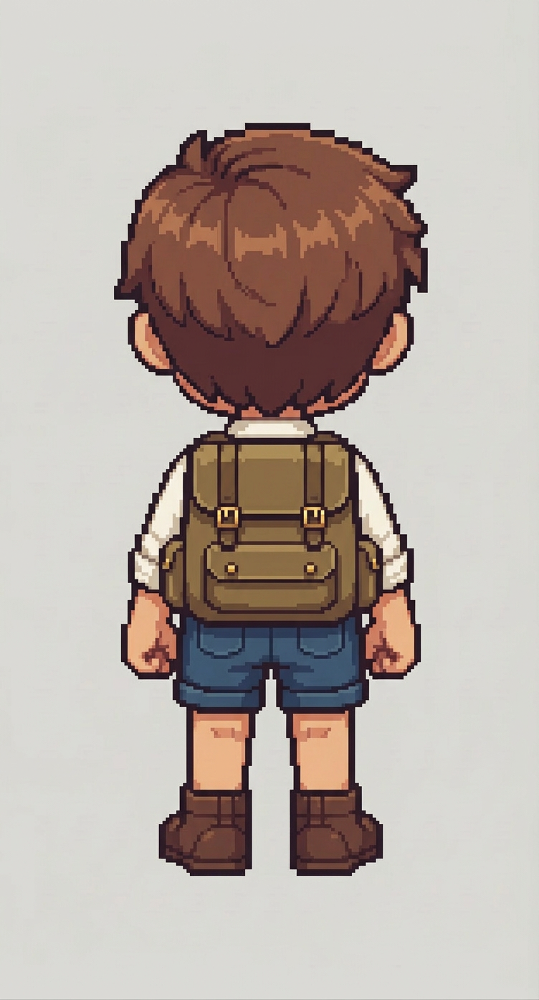
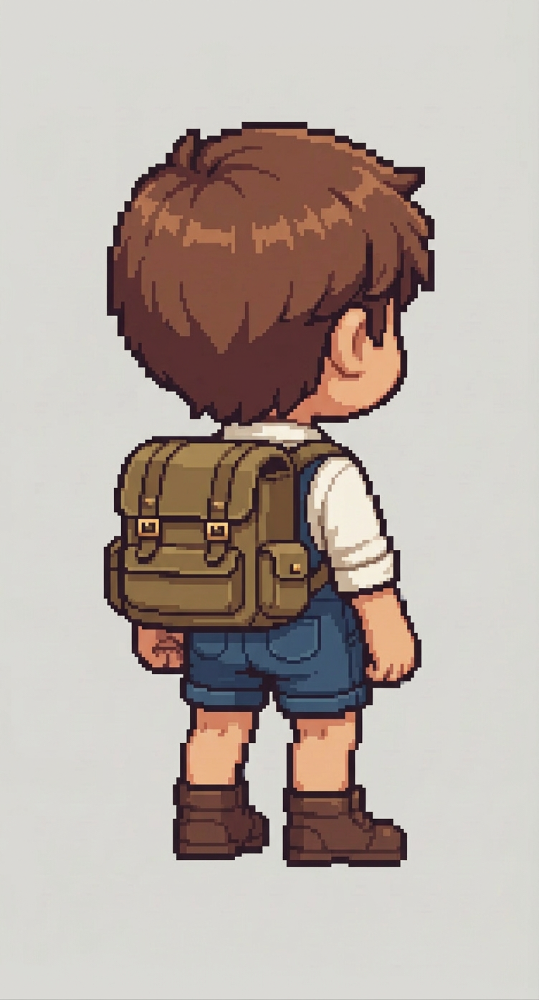
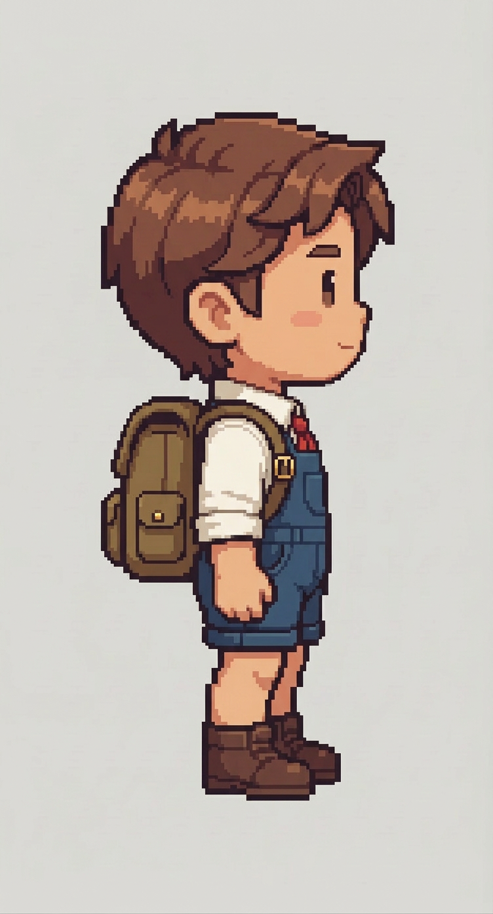
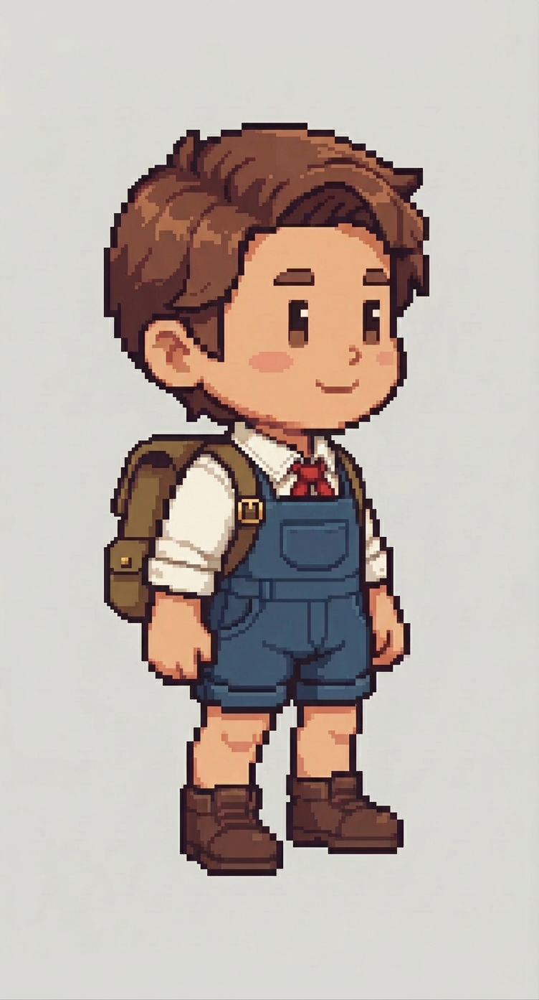
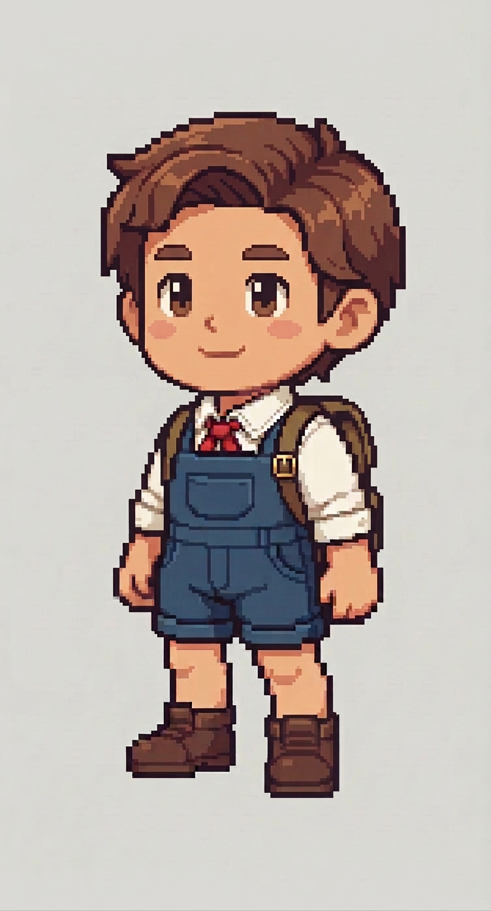
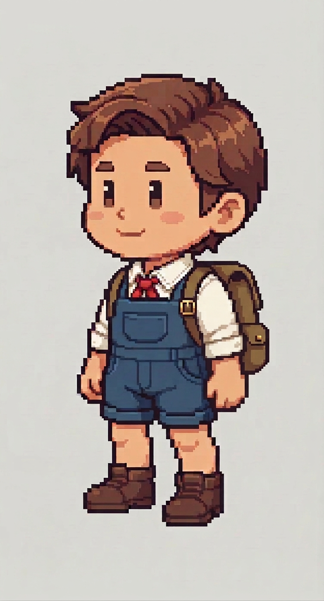
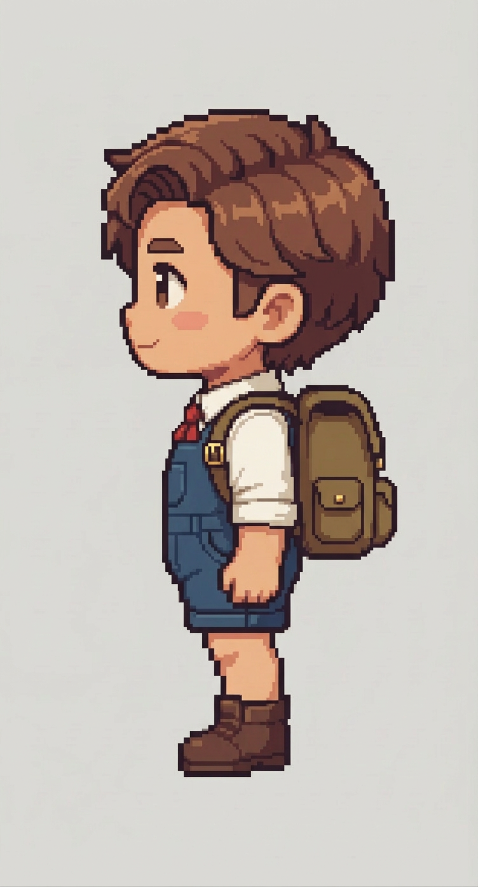
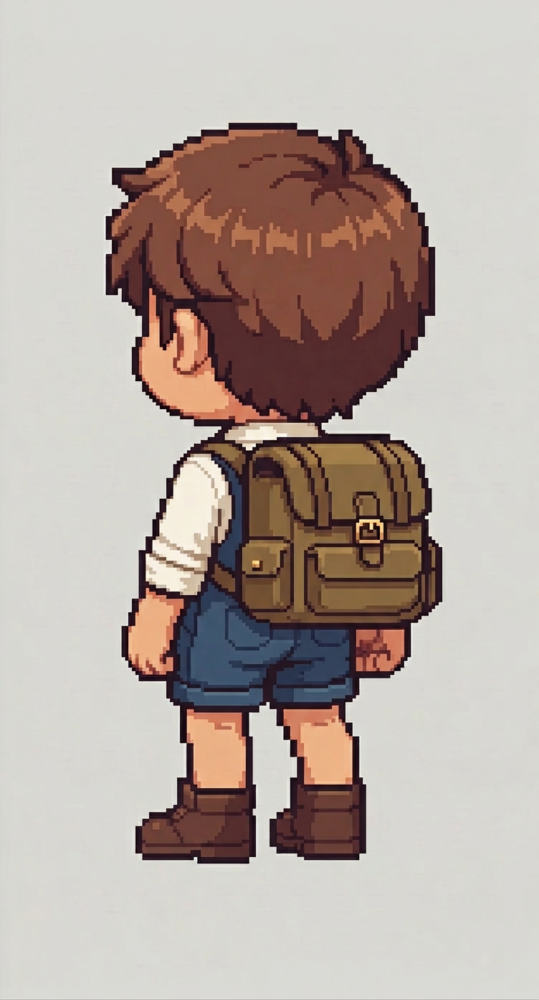

Referensi karakter: delapan arah
Konsep pose diam untuk acuan animasi, bukan frame animasi atau delapan arah yang sudah dipakai gameplay. Arah serong di sini adalah tampak visual relatif terhadap layar; detail antar konsep masih perlu diseragamkan sebelum digunakan sebagai sprite animasi. Tampak barat laut dicerminkan dari gambar konsep untuk arah yang tepat.







